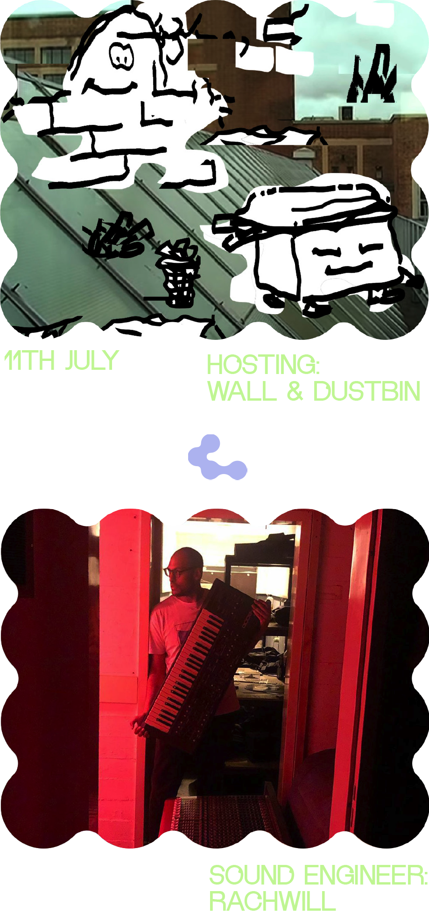

11:15–11:30 Introduction by Dustbin & Wall & Rachwill
11:30–11:45 Interview with Kristján Steinn Kristjánsson
11:45–12:00 Interview with Kaja Hribšek
12:00–12:15 House Human songs by Tuana Inhan
12:15–12:30 Interview with Jaap Meijers
12:30–12:45 Interview with Sam
12:45–13:00 House Human songs by Tuana Inhan
13:00–13:15 Interview with Muireann Nic An Bheatha
13:15–13:30 Interview with Lou-Lou Staaveren
13:30–13:45 Interview with Lena Kuzmich
13:45–14:00 House Human songs by Tuana Inhan
14:00–14:30 Interview with Mushroom Radio
14:30-17:00 Graduation Ceremony
17:00–17:30 Piet & Farah.
17:30–18:00 Non Neurotypical Art Students
18:00–18:45 Pelle & Minji b2b
18:45–19:00 Pablo & Lena
19:00-… Rachwill, Blandine & Hana Live.
